25/04/2021 — Phụ nữ ở độ tuổi 40 hồi hộp đánh trống ngực và tức ngực do một nguyên nhân bất thường
Bản dịch tiếng Việt của bài "A woman in her 40s with palpitations and chest pressure of unusual etiology" – Dr. Smith’s ECG Blog. Giữ nguyên toàn bộ 16 hình ảnh của bản gốc.
Do Magnus Nossen MD đến từ Na Uy gửi và viết, với một số chỉnh sửa nhỏ của Meyers và Smith
Một bệnh nhân nữ ở độ tuổi 40, không có bệnh tim đã biết, đến khoa cấp cứu (ED) vì hồi hộp đánh trống ngực (palpitations) và các cơn tiền ngất (presyncope) tái diễn trong nhiều năm, thường kéo dài 1-5 phút, đôi khi kèm khó chịu ở ngực, và tăng dần về tần suất trong vài tháng gần đây.
Trước đó bà đã được siêu âm tim và ghi điện tâm đồ lưu động 5 ngày tại một phòng khám tư, cả hai đều bình thường. Rối loạn nhịp nghi ngờ đã không được ghi lại. Sau đó bà mua một chiếc đồng hồ thông minh có khả năng ghi điện tâm đồ. Bà đến phòng cấp cứu với các bản in được ghi trong lúc hồi hộp đánh trống ngực. Lúc đến viện bà không có triệu chứng.
Điện tâm đồ #1:

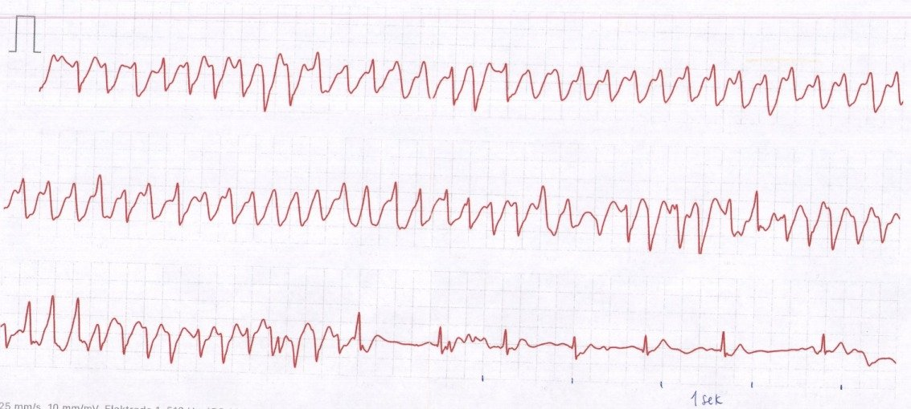
Điện tâm đồ #1: Bản in dải nhịp từ đồng hồ Apple Watch của bệnh nhân (25mm/s). Trong chừng mực có thể diễn giải một chuyển đạo đơn lẻ, bản ghi này cho thấy một nhịp nhanh thất phức bộ rộng, không đều, với trục luân phiên. Tổng thời gian của cơn này là 90 giây. Từ dải nhịp đơn lẻ này, các chẩn đoán phân biệt gồm rung nhĩ kèm dẫn truyền lệch hướng/tiền kích thích, hoặc VT đa dạng (polymorphic VT) (có thể do QT dài, do thiếu máu cục bộ, hoặc thuộc thể do catecholamine). Dựa trên các nhát bình thường ở cuối dải nhịp, không có bằng chứng QT dài. Bệnh sử không phù hợp với CPVT. Bà chưa từng có các cơn hồi hộp đánh trống ngực/tiền ngất khi hoạt động thể lực. Bà được nhập viện để thăm dò thêm.
Điện tâm đồ #2:

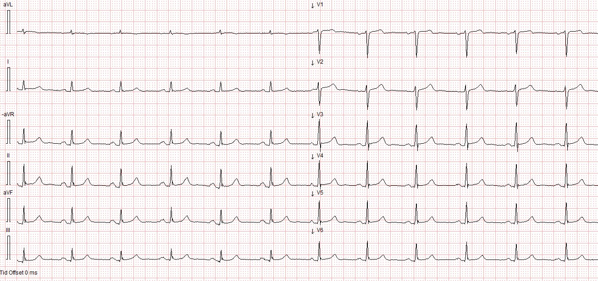
Điện tâm đồ #2: Lúc nghỉ khi nhập viện: nhịp xoang (SR), các khoảng và trục bình thường. Tái cực bình thường. Không thấy dấu hiệu tiền kích thích. QTc bình thường. (434ms) Không có hình thái Brugada. Không có sóng epsilon. Khía QRS nhẹ ở các chuyển đạo thành dưới, nhưng không thật sự phù hợp với dấu hiệu Crochetage. Diễn giải: Điện tâm đồ lúc nghỉ bình thường.
Siêu âm tim cho thấy tim có cấu trúc bình thường với chức năng bình thường. MRI cho thấy thất phải và thất trái hoàn toàn bình thường với chức năng tâm thu bình thường và EF 70%. Nghiệm pháp gắng sức được thực hiện đầy đủ, không có rối loạn nhịp hay dấu hiệu thiếu máu cục bộ. Bệnh nhân được chuyển đi chụp mạch vành. Kết quả cho thấy thân chung động mạch vành trái (LMCA), LAD, Cx và RCA đều thông. Không có thay đổi xơ vữa. Xét nghiệm gen cho VT đa dạng do catecholamine âm tính. Bệnh nhân được đặt máy khử rung tim cấy được (ICD). Bệnh nhân được bắt đầu dùng thuốc chẹn beta, cho xuất viện về nhà với theo dõi ICD tại nhà.
Sau khi đặt ICD và điều trị thuốc chẹn beta, bà có các cơn hồi hộp đánh trống ngực và tiền ngất kịch phát với tần suất tăng dần. Bà lại được nhập viện để theo dõi từ xa (telemetry) và theo dõi diễn biến. Bà có vài cơn (kéo dài đến 2 phút) hồi hộp đánh trống ngực/tiền ngất trước khi nhập viện và trong khi đang theo dõi từ xa. Đã kịp ghi điện tâm đồ 12 chuyển đạo trong các cơn này.
Báo cáo ICD:

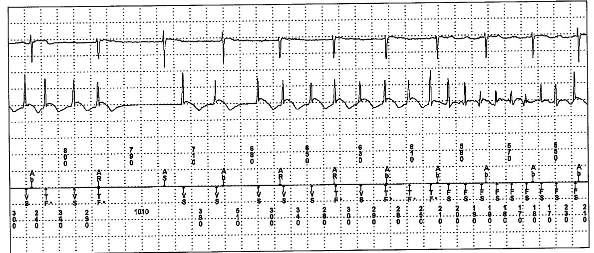
Báo cáo ICD: Đây là trích từ báo cáo ICD, cho thấy cả kênh nhĩ (dạng sóng phía trên) và kênh thất (dạng sóng phía dưới). Kênh thất cho thấy nhịp nhanh thất không đều với khá nhiều khoảng R-R ngắn hơn 200ms, tương ứng với tần số thất lớn hơn 300/phút trong thời gian ngắn. Có 14 cơn VT trong một khoảng thời gian 24 giờ với tần số thất từ 200-283/phút. Phần lớn các cơn chỉ kéo dài vài giây.
Điện tâm đồ #3:

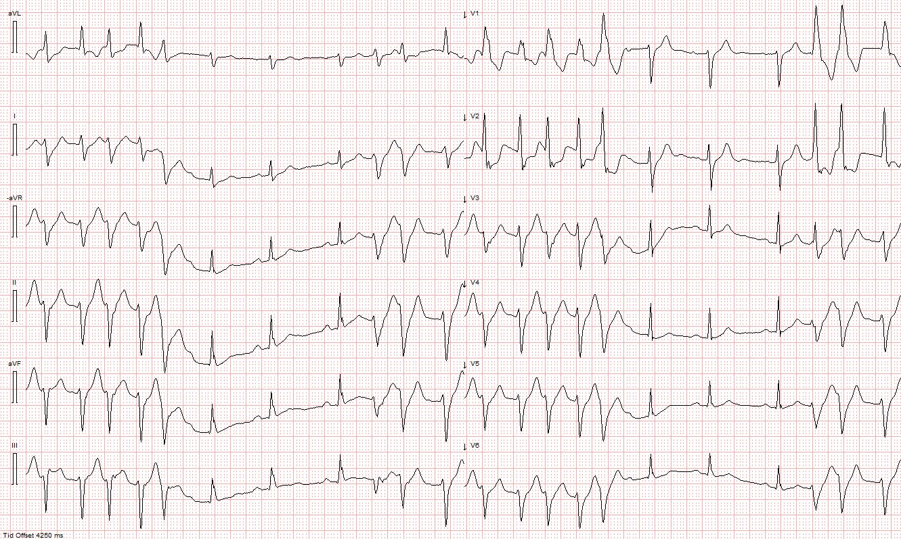
Điện tâm đồ # 3: Bản ghi 12 chuyển đạo này được ghi trong một trong các cơn của bệnh nhân. Điện tâm đồ này cho thấy các loạt nhịp nhanh thất không đều. Hình thái QRS thay đổi nhẹ, giống RBBB+LAFB. Có những lúc ngưng cơn xen với nhịp xoang bình thường.
Điện tâm đồ #4:

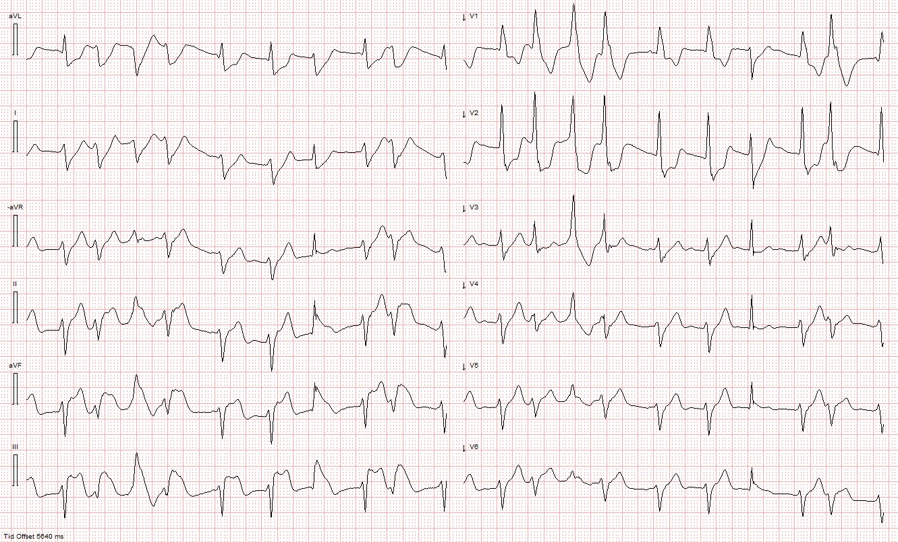
Điện tâm đồ # 4 (chuyển đạo chi ở bên trái và chuyển đạo trước tim ở bên phải). Điện tâm đồ này rất đáng chú ý và được ghi trong một cơn khác của bệnh nhân. Điện tâm đồ này cho thấy PVC rất thường xuyên, xen một số phức bộ dẫn truyền bình thường.
Tuy nhiên, có những dấu hiệu nổi bật liên quan đến nguyên nhân của tình trạng này! Có một số phức bộ hẹp nhìn thấy ở cả các chuyển đạo chuẩn lẫn các chuyển đạo trước tim, cho thấy ST chênh lên dạng “vây cá mập” (shark fin) ở các chuyển đạo II, III, aVF và V5-V6, kèm đoạn ST chênh xuống soi gương (reciprocal) ở các chuyển đạo trước tim đầu và các chuyển đạo bên. Các phức bộ rộng cho thấy đoạn ST chênh lên ngược hướng quá mức ở II, III aVF và ST chênh xuống ngược hướng quá mức ở chuyển đạo I và V1-V2. Có đoạn ST chênh xuống đồng hướng không phù hợp ở chuyển đạo I. Theo tiêu chuẩn Sgarbossa cải biên theo Smith, đôi khi có thể chẩn đoán thiếu máu cục bộ xuyên thành chỉ từ các phức bộ dẫn truyền lệch hướng – dĩ nhiên các phức bộ hẹp càng củng cố thêm nguyên nhân là thiếu máu cục bộ xuyên thành từng lúc gây ra rối loạn nhịp ác tính!
Điện tâm đồ #5 và #5-1:

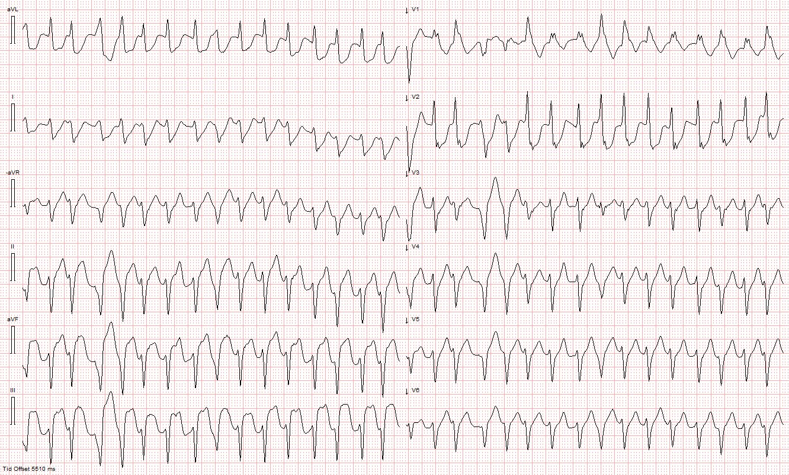

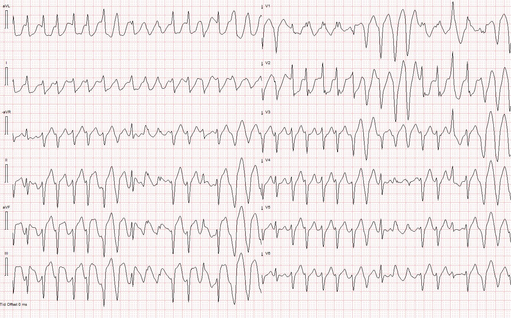
Điện tâm đồ #5 và điện tâm đồ #5-1: Từ cùng một cơn nhịp nhanh. Tương tự điện tâm đồ số 4, nhưng nhanh hơn. 178/phút. Theo diễn giải của tôi, cơ chế của nhịp nhanh thất không phải là vào lại mà là do cơ tim thiếu máu cục bộ nặng dẫn đến tình trạng cơ tim dễ bị kích thích, khởi phát PVC với các ổ nằm ở vùng phân nhánh sau của nhánh trái.
Điện tâm đồ #6:

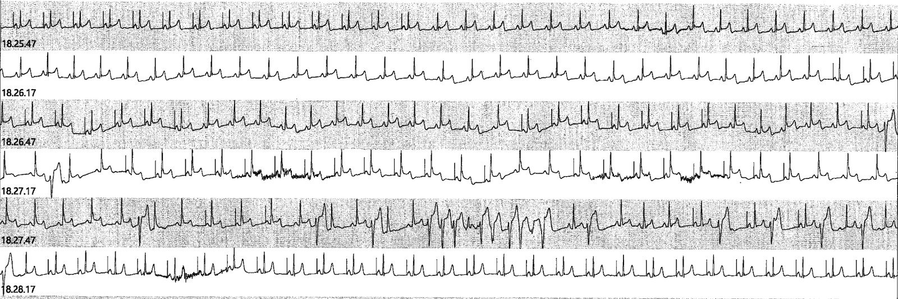
Điện tâm đồ # 6 Đây là một dải nhịp từ theo dõi từ xa (telemetry). Bệnh nhân có vài cơn nhịp nhanh – như có thể thấy, có các thay đổi ST-T bệnh lý động (dynamic) rõ ràng, với ST chênh lên trước cơn VT đa dạng ngắn. Điều này một lần nữa củng cố thêm chẩn đoán, và cho thấy các thay đổi ST-T quan sát được trong lúc nhịp nhanh không phải do cơ chế típ II, dù điều này thực ra chưa bao giờ bị nghi ngờ là nguyên nhân.
Điện tâm đồ #7:

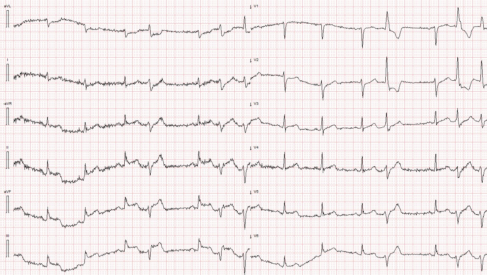
Điện tâm đồ #7: Ở điện tâm đồ này, người ta đã ghi lại được lúc khởi phát rối loạn nhịp thất. Có một ít trôi đường nền – tuy nhiên ST chênh lên là không thể nhầm lẫn, và sau khi tồn tại một thời gian, thiếu máu cục bộ dường như khởi phát các PVC.
Bệnh nhân được chuyển đi làm nghiệm pháp kích thích. Ngừng thuốc chẹn beta. Trước đó bà không được bắt đầu điều trị vì điều trị có thể che lấp co thắt.
Hình ảnh và video chụp mạch vành:

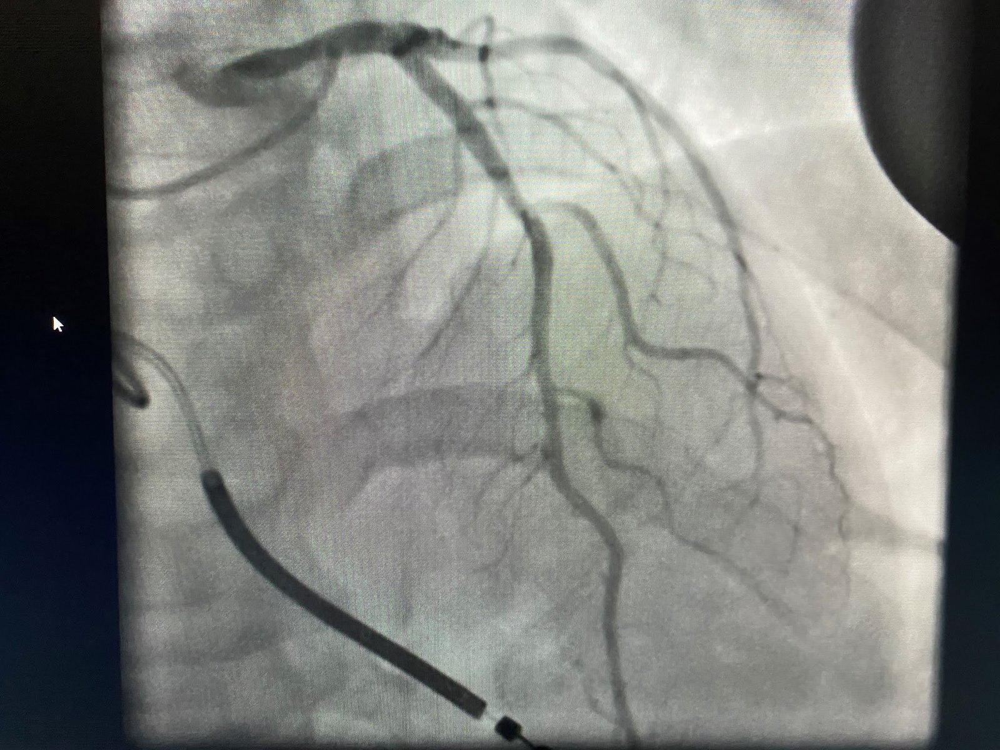

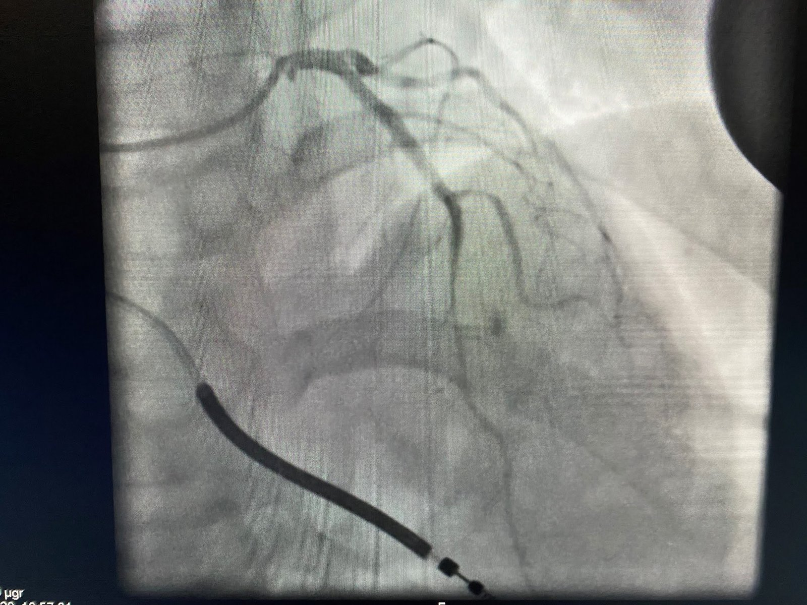
Hình ảnh và video chụp mạch vành ghi lại co thắt được đưa vào ở trên. Nghiệm pháp kích thích được thực hiện trên LAD. Vì phân bố ST chênh lên trên điện tâm đồ thuộc vùng chi phối của RCA, họ đã không làm nghiệm pháp kích thích ở RCA do nguy cơ gây ra rối loạn nhịp ác tính. Nghiệm pháp co thắt được xem là dương tính (đau ngực và thay đổi điện tâm đồ).
Bắt đầu dùng nitrat tác dụng kéo dài và diltiazem. Bệnh nhân được xuất viện về nhà. Theo dõi ICD tại nhà không phát hiện rối loạn nhịp đáng kể nào. Kiểm tra ICD sau 8 tuần không thấy rối loạn nhịp đáng kể. Các triệu chứng tiền ngất đã biến mất khi điều trị.
Trong ca này, nguyên nhân của rối loạn nhịp rất khó nắm bắt. Bệnh nhân được ghi nhiều điện tâm đồ trong lúc nhịp nhanh. Một số có và một số không có dịch chuyển đoạn ST không tương xứng. Ca này minh họa rõ rằng hiểu biết về tiêu chuẩn Sgarbossa cải biên theo Smith rất hữu ích trong thực hành lâm sàng, ở đây làm dấy lên nghi ngờ mạnh mẽ rằng thiếu máu cục bộ do co thắt là nguyên nhân gây rối loạn nhịp. Bệnh nhân dường như đã được điều trị đúng và có đáp ứng lâm sàng.
Những điểm cần học:
Thiếu máu cục bộ là một trong những nguyên nhân quan trọng nhất của VT đa dạng.
Co thắt mạch vành có thể là một nguyên nhân khó nắm bắt, thoáng qua và gây bối rối của thiếu máu cục bộ từng lúc và rối loạn nhịp.
Các nguyên tắc về ngược hướng phù hợp (bao gồm tiêu chuẩn Sgarbossa cải biên) có thể áp dụng cho hầu như mọi QRS phức bộ rộng, thậm chí cả PVC.
Xem ca co thắt mạch vành hấp dẫn khác(!) của Dr. Nossen tại đây:
Fascinating case of dynamic shark fin morphology – what is going on? (Ca bệnh hấp dẫn về hình thái vây cá mập động – chuyện gì đang xảy ra?)
Xem các ca sau về việc dùng tiêu chuẩn Sgarbossa cải biên trong bối cảnh PVC:
Look at the PVCs!! (Hãy nhìn các PVC!!)
Look at the PVCs (again)!! (Hãy nhìn các PVC – lần nữa!!)
Hyperacute T-waves and Concordant ST Elevation seen in PVCs only (Sóng T tối cấp và ST chênh lên đồng hướng chỉ thấy ở PVC)
Anterior STEMI and multiform PVCs with Narrow Coupling Interval. When to give beta blockers in acute MI? (STEMI thành trước và PVC đa dạng với khoảng ghép hẹp. Khi nào nên cho thuốc chẹn beta trong nhồi máu cơ tim cấp?)
Dưới đây chúng tôi đăng lại một bình luận xuất sắc và chi tiết của Dr. R. Balasubramanian MD đến từ Ấn Độ:
Điện tâm đồ
lúc nhập viện #2.
Có trát đậm (slur) tại điểm J, thấy
ở II,III, AVF và V4,V5 & V6 ( Hình 1).

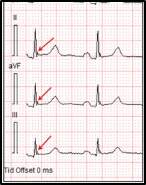
Hình 1 Điện tâm đồ #2 – Các mũi tên đỏ
chỉ vào sóng J ở II,III & AVF.
Chỗ trát đậm
xuất hiện tại điểm J, nhưng không có điểm J chênh lên cũng như không có sai lệch ST nào.
Vị trí
dưới-bên của chúng là đáng lo ngại, mặc dù chúng
chưa có hình dạng ác tính.
Điểm J chênh lên kèm đoạn ST nằm ngang hoặc dốc xuống là dấu hiệu chỉ điểm của rối loạn nhịp
thất ác tính. Ai cũng biết rằng
sóng J có thể xuất hiện từng lúc và
chỉ trở nên rõ rệt hoàn toàn ngay trước hoặc ngay sau
các cơn rối loạn nhịp thất. Thực tế,
khi xem lại
toàn bộ bảy điện tâm đồ, tôi có thể phát hiện
các sóng J tinh tế cũng như điển hình, với đoạn ST
dốc xuống kinh điển như sau:
Ở điện tâm đồ #4, lưu ý điểm J chênh lên ở các QRS dẫn truyền
từ xoang trong AVR,II,AVF & III.
Ở V4,V5 & V6 cũng
thấy sóng J (tinh tế). ( Hình 2) & (Hình 3)

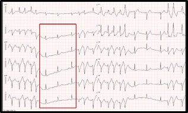
Hình 2.
Điện tâm đồ #4- Điểm J chênh lên thấy ở
các QRS dẫn truyền từ xoang trong AVR,II, AVF & III.

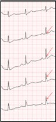
Hình 3 Điện tâm đồ #4-Các mũi tên đỏ chỉ điểm J
chênh lên ( phóng to)
Có sự chênh lên tăng dần của điểm J
kèm đoạn ST dốc xuống
thể hiện ở phần phóng to của điện tâm đồ #5 trong AVR,II, AVF & III,
dường như tạo nên
hình ảnh vây cá mập (Hình 4). Ở V5 & V6 cũng thấy các phức bộ tương tự
trông
giống như mô tả kinh điển trong sách giáo khoa về
SÓNG J ác tính.(Hình 5)

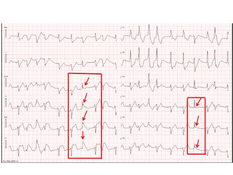
Hình 4 Điện tâm đồ # 5
cho thấy SÓNG J được chỉ bằng các mũi tên ĐỎ.

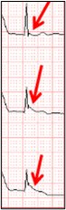
Hình 5 Điện tâm đồ #5: Các mũi tên ĐỎ chỉ
SÓNG J ác tính ở V5 & V6 (phóng to)
Vì vậy, tôi xin đề xuất đưa HỘI CHỨNG SÓNG J vào chẩn đoán cuối cùng của bệnh nhân này như sau:
HỘI CHỨNG SÓNG J
ĐAU THẮT NGỰC DO CO THẮT MẠCH
NHỊP NHANH THẤT ĐA DẠNG
TÁI PHÁT
Trân trọng
Dr.R.Balasubramanian
MD
Giáo sư danh dự
Nội khoa tổng quát
SLIMS
Pondicherry –
ẤN ĐỘ